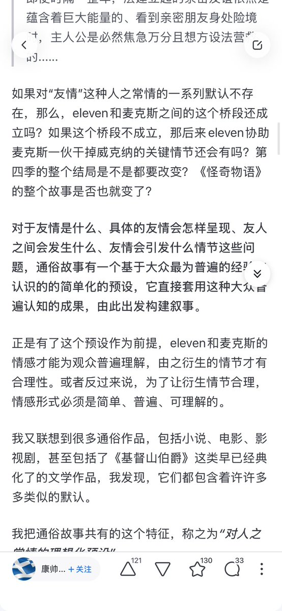
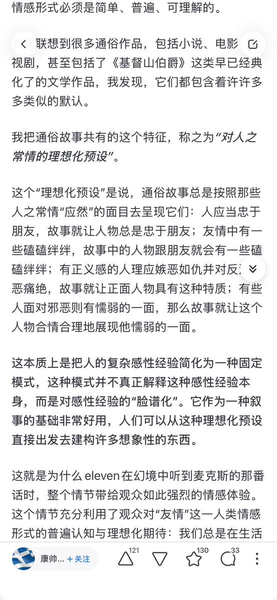

我把通俗故事共有的这个特征，称之为“对人之常情的理想化预设”。
这个“理想化预设”是说，通俗故事总是按照那些人之常情“应然”的面目去呈现它们：人应当忠于朋友，故事就让人物总是忠于朋友；友情中有一些磕磕绊绊，故事中的人物跟朋友就会有一些磕磕绊绊；有正义感的人理应嫉恶如仇并对反派深恶痛绝，故事就让正面人物具有这种特质；有些人面对邪恶则有懦弱的一面，那么故事就让这个人物合情合理地展现他懦弱的一面。
这本质上是把人的复杂感性经验简化为一种固定模式，这种模式并不真正解释这种感性经验本身，而是对感性经验的“脸谱化”。它作为一种叙事的基础非常好用，人们可以从这种理想化预设直接出发去建构许多想象性的东西。
这个“理想化预设”是说，通俗故事总是按照那些人之常情“应然”的面目去呈现它们：人应当忠于朋友，故事就让人物总是忠于朋友；友情中有一些磕磕绊绊，故事中的人物跟朋友就会有一些磕磕绊绊；有正义感的人理应嫉恶如仇并对反派深恶痛绝，故事就让正面人物具有这种特质；有些人面对邪恶则有懦弱的一面，那么故事就让这个人物合情合理地展现他懦弱的一面。
这本质上是把人的复杂感性经验简化为一种固定模式，这种模式并不真正解释这种感性经验本身，而是对感性经验的“脸谱化”。它作为一种叙事的基础非常好用，人们可以从这种理想化预设直接出发去建构许多想象性的东西。

